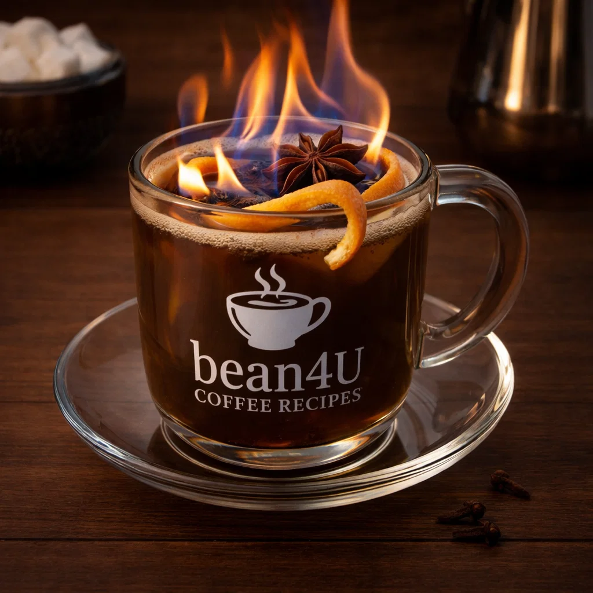

Café Brûlot

Ingredients
- Strong brewed coffee or espresso (enough for serving)
- 2–3 tbsp brandy or dark rum
- Peel of 1 orange and 1 lemon
- 2 tbsp sugar
- Spices: cinnamon stick, cloves
Preparation
- Combine spirits, citrus peels, sugar and spices in a pot and warm gently.
- Add coffee and light carefully to flambé for a few seconds (optional, be safe).
- Extinguish flame, strain into cups and serve hot.
- youtube short quickly explaining it:
- short Explanation
Video from @neworleansflavor
Channel